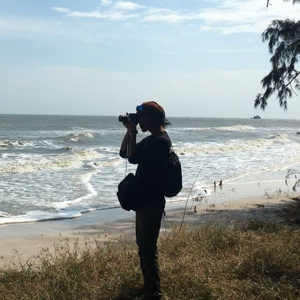

Biography

久保田武尊 Kubota Hotaka
1989年生まれ 兵庫県三田市出身
| 2002年 | 中学生で「キノの旅」という小説を読み旅人に憧れをもつ。 |
| 2005年 | 高校１年生。突如人付き合いがさっぱりわからなくなりぼっちになる。ロックバンドBOOMBOOMSATELLITESを知ったことをきっかけに音楽オタクに成長する。ロック音楽の常識にとらわれない自由奔放さに魅了される。 |
| 2009年 | ふるさとを離れて一人暮らしをしたいと思い、1年の浪人生活の後に信州大学工学部に進学。同年、人生初の彼女ができる。 |
| 2013年 | 就職難の中、無事に地方末端ブラックJAに就職。海外バックパッカー旅行のために三年間で300万円を貯める計画を立てる。 |
| 2016年春 | 旅行資金300万円とストレスを貯め終え、上司に中指立てて円満退社。自由を求め念願のバックパッカー旅行に出る。 |
| 2016年～17年 | 写真を撮りながら各地を放浪。ユーラシア大陸を横断した果てにアイスランドでのオーロラ体験に感動し、17年春に帰国。帰国後にニコニコ動画にアップした動画が1万再生を超える。 |
| 2017年 | 大手医薬品メーカーに再就職するも、保守保全、維持管理を旨とする仕事を退屈に感じる。 |
| 2018年 | 新しいものやサービスを生み出す革新的なweb/IT業界、時間や場所にとらわれないフリーランスという働き方に魅力を感じ、webエンジニアへの転向を決意。 |